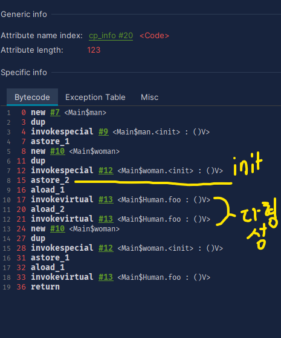
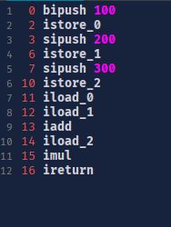

가상 머신의 실행 엔진이 바이트 코드를 실행하기 위해 두가지 방법을 채택할 수 있다.
- 해석 실행 (인터프리터)
- 컴파일 실행 (Jit컴파일러 로 네이티브 코드 생성후 실행)
실행 엔진은 어떠한 입력(바이트 코드)도 동일한 실행결과로 출력할 수 있다.
8.2 런타임 스택 프레임 구조
- 메서드 호출 시작부터 실행 종료까지 과정은 스택 프레임을 가상 머신 스택으로 푸시하는 작업임
- 현재 스택 프레임 : 실행 엔진 관점에서 활성 스레드의 스택 맨위의 프레임
- 현재 메서드 : 현재 스택 프레임의 메서드
- 실행 엔진이 실행 하는 모든 바이트 코드 명령어는 현재 스택 프레임에서만 작동
구성
- 지역 변수 테이블
- 매서드의 매개변수와 메서드 안에서 정의된 지역 변수를 저장하는 공간
- 지역 변수 테이블은 스레드 스택에 스레드 별로 따로 만들어진다.
- 매개 변수 또한 지역 변수 테이블에 포함된다. 이 테이블에 변수가 추가되는 순서
- this ( 암묵적 매개변수 )
- 매서드 매개 변수
- 메서드 본문의 지역 변수들
- 피연산자 스택
- 메서드가 실행될 때 해당 메서드의 피연산자 스택은 비어있음
- 실행중 바이트 코드 명령어가 피연산자 스택에
push , pop작업 수행
- 동적 링크
- 메서드에 이용하는 외부 객체를 가리키는 참조는 런타임 상수 풀을 참조하는데 이것이 동적 링크를 가능하게 해준다.
- 정적 해석 : 클래스 로딩 해석 단계에서 심벌 참조가 직접 참조로 변환된다
- 동적 링크 : 실행중에 심벌 참조가 직접 참조로 변환된다.
- 메서드 반환 주소
- 갑작스러운 메서드 호출 완료 : 예외처리 안되었을 경우 반환값 전달 x
- 정상적인 메서드 호출 완료 : 호출 메서드에 현재 메서드의 메서드 반환 명령어에 따라 알맞은 반환 값 타입을 반환한다.
- 메서드가 종료시 메서드를 호출한 위치로 돌아가야한다.
- 일반적으로는 호출자의 프로그램 카운터 값을 반환 주소로 사용한다.
- 예외 발생시에는 예외 핸들러 테이블에 의해 반환 주소가 결정된다.
8.3 메서드 호출
메서드 호출 단계에서 수행하는 일은 오직 호출할 메서드의 버전을 선택하는 것이다.
오버라이딩한 함수가 존재할때 부모 클래스에 1개, 자식 클래스에 1개의 버전이 존재한다.
해석
- 메서드 호출 대상은 모두 클래스 파일의 상수풀에 심벌 참조로 기록되어 있다.
- 메서드 호출 대상은 클래스 로딩 단계에서 일부 심벌참조 -> 직접 참조 작업을 수행한다. ( 정적 해석 으로 private, static 가 해당 )
- 메서드 호출 바이트 코드 명령어
- invokestatic, invokespecial
정적 및 비가상 메서드를 호출하며, 클래스 로딩 시 직접 참조로 변환될 수 있다.
(비기상 메서드 : static, private, 인스턴스 생성자, 부모 클래스의 메서드) - invokedynamic,invokeinterface,invokevirtual
가상 메서드 호출 및 동적 호출로, 런타임에 호출 대상이 결정된다.
- invokestatic, invokespecial
- 비가상 메서드 해석은 컴파일 타임에 완전히 정해진다.
- 가상 메서드의 호출은 동적 호출로 런타임에 결정된다.
디스패치
- 메서드 호출의 또다른 형태로 (단일/다중,동적,정적) 의 조합으로 구성된다.
- 다형성의 가장 기본에 해당하는 내용, 가상 머신이 옳바른 메서드 버전을 결정하는 방법
정적디스패치 ( 메서드 오버로드 해석 )
Human child=new Man(); // 상속 관계이다.
//Human : 정적타입, 겉보기 타입 : 컴파일 타임에 결정
//Man : 실제타입, 런타임 타입 : 런타임에 결정- 컴파일러는 오버로딩 함수를 정적타입을 통해 어떤 메서드를 호출할지 결정한다.
- 정적디스패치 : 메서드 버전 선택에 정적 타입을 참고 하는 모든 디스패치작업 메서드 오버로딩이 대표적
- 컴파일 타임에 이루어진다. 따라서 해석이라고 표현하기도 한다
- 정적 메서드는 컴파일 타임에 확정, 클래스 로딩중 해석, 오버로딩된 정적메서드는 정적 디스패치를 통해 이루어진다.
동적 디스패치

- 17,21에서 사용된
invokevirtual바이트코드 명령어는 후보 메서드들을 찾아 그중 하나를 특정해 다형성을 구현한다. 그 절차는 아래와 같다- 피연산자 스택 상단 첫 요소의 객체의 실제 타입 ( woman,man )을 찾음
- 객체와,
foo()라는 일치하는 이름이 있으면 접근권한 검사 - 존재하지 않는다면 다음 부모 클래스로 이동후 2를 반복
- 최상위 클래스에서 메서드를 찾지 못하면
AbstratMethodError
- invokevirtual 은 런타임 수신 객체 ( Human )의 실제 타입을 해석함
- 이렇게 런타임에 실제 타입을 해석해 메서드 버전을 결정하는 방식이 동적 디스패치임
단일 디스패치 / 다중 디스패치
- 메서드 볼륨 : 메서드의 수신 객체, 매개 변수의 합
- 볼륨 수에 따라 단일 / 다중 구분
- 단일 : 한 볼륨 안에서 대상 메서드 선택
- 다중 : 여러 볼륨에서 대상 메서드 선택
- 오버로딩 하는 부모 객체의 경우 알맞은 함수를 선택하기 위해 2가지 이상의 볼륨을 사용해 다중 디스패치이고, 오버라이딩 하는 자식 객체의 경우 이미 컴파일 타임에 메서드의 시그니처가 결정 되었기 때문에 여러 볼륨을 선택에 이용하지 않아 단일 디스 패치이다.
가상 머신의 동적 디스패치 구현
- 동적 디스패치는 프로그램이 실행 중에 매우 자주 일어난다.
- 그래서 jvm 은 메타 데이터 조회 대신 가상 메서드 테이블 인덱스를 사용해 적절한 메서드를 찾는 착업의 속도를 개선했다.
- 가상 메서드 테이블 :
- 클래스에서 오버라이딩 하지 않은 메서드들은 부모클래스의 메서드 주소를 가르킨다.
- 클래스 로딩중 링킹 (준비 단계에서 클래스 변수들의 초기값이 설정된 이후) 작업에서 초기화 된다.
8.4 동적 타입 언어 지원
invokedynamic 바이트 명령어에 해당하며 람다식을 매끄럽게 구현하는 토대가 되었음
동적 타입 언어 :타입 검사 과정중 주요 단계들이 런타임에 수행된다.
자바의 동적 타이핑
- 메서드 호출 바이트 코드 명령어는 컴파일타임에 생성되는 CONSTANT_Methodref_info, CONSTANT_InterfaceMethodref_info 두가지의 심벌 참조만을 매개변수로 사용할 수 있었다.
- 그러나, 동적타이핑은 런타임에 호출대상을 결정할 수 있어야 하는 특징이 있다.
- 또한, 인라인 최적화를 수행할 수 없었다.
java.lang.invoke
- 자바는 함수를 매개변수로 전달할 방법이 없어, 인터페이스를 사용한 객체를 매개변수로 전달하였다.
- 해당 패키지에서 추가된 메서드 핸들을 사용하면 C의 함수 포인터, c#의 delegate 와 같이 함수를 전달할 수 있다.
invokedynamic
- 메서드 핸들과 유사한 기능을 하는데, 메서드 해석의 책임음 jvm 에서 사용자 코드로 옮긴다.
- 다만, 메서드 핸들은 api 수준에서 구현되고 invokedynamic 은 바이트코드와 클래스의 속성 및 상수 수준에서 구현된다.
- invokedynamic 은 디스패치 로직을 가상머신이 아닌 개발자가 결정한다.즉, 위의 단일 디스패치, 다중 디스패치 결정 방식이 아닌 사용자가 함수의 디스패치를 결정할 수 있다.
8.5 스택 기반 바이트코드 해석 및 실행 엔진
- 해석 실행
- 인터프리터를 의미하나 자바는 JIT 컴파일 , 인터프리터 두 가지 방식을 스스로 판단해 실행한다.
- JAVAC 는 어휘 분석, 구문 분석, 추상 구문 트리 생성, 구문 트리를 탐색해 바이트 코드 명령어를 생성하는 과정을 담당한다.
- 스택 기반 명령어 집합과 레지스터 기반 명령어 집합
- 자바는 스택 기반 명령어 집합 아키텍처를 따른다
- 스택 기반 명령어 집합은 특정 하드웨어에 의존하지 않는 장점이 있다.
- 코드가 간결해지는 반면, 레지스터 기반 아키텍처보다 명령어의 총 개수가 많아지고 메모리 접근 빈도가 늘어 난다는 단점이 존재한다.
- 메모리 접근을 줄이기 위해 자주 사용 되는 작업을 레지스터 에 매핑 하여 성능 하락을 감소시킨다.
- 스택 기반의 해석 실행 과정
- 피연산자 스택을 통해 데이터를 교환 하는 방식을 사용한다.
- jit 컴파일러로 최적화 되거나, 해석 실행 성능 최적화로 실제로는 개념 모델과 같이 실행되지는 않는다.

피연산자 스택에
istore,iload 다시 넣는 작입이 반복된 후에 메서드 호출자에 ireturn 결과값 반환